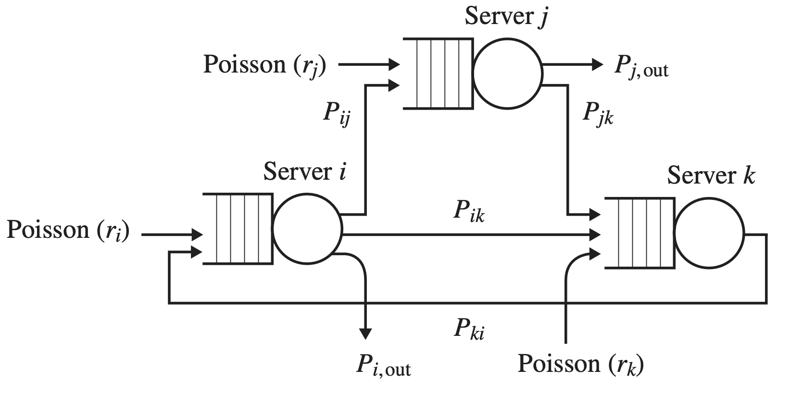
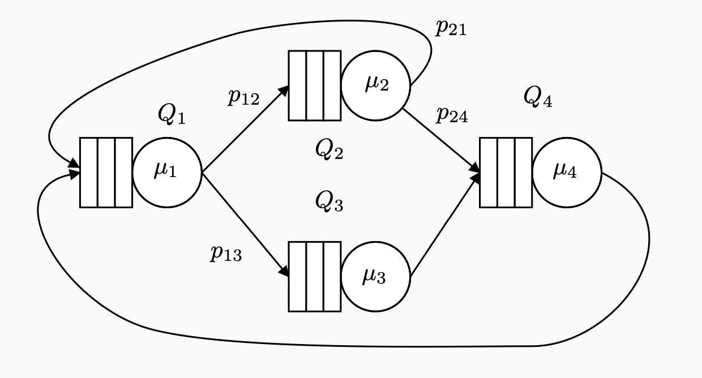

Queueing Networks
When we model a complex system, it may be useful to combine different servers each of which is equipped with its queue and discipline. Queueing networks are composed by several components that give responses to the users and they are configured for different purposes or reasons:
- Duplication of components to improve scalability and reliability;
- A set of heterogeneous components having different functionalities that interact one another.
1 Typologies of queueing networks
1.1 Open networks
Open networks are a generalization of the queueing system described in the previous chapters: in fact, they are an open network with single station.
The main characteristics of these systems are:
- One or more arrival streams;
- One or more departure streams;
- The scalability is defined in terms of Jobs/sec;
- Each station in the queueing network can have arrivals coming from other stations;
- Having a Poisson (or whatever) arrival process doesn’t imply that the incoming process of other stations is the same;
- We assume that the capacity of each queue is infinite.
1.1.1 Instability of open networks
Here’s the definition:
Instability of open networks: An open queueing network is unstable if, for some initial state, the number of jobs in the network will, with positive probability, go to infinity as time \(t\rightarrow\infty\).
In a stable open queueing network, for any sub-network, the total flow incoming must be equal its throughput.
1.2 Closed networks
Closed queueing networks are characterised by a fixed number of customers that move among the system’s stations. There is not any arrival stream or departure.
The main characteristics of these systems are:
- They are always stable;
- The users (or jobs) alternate a “thinking” and “submitting” phases;
- The scalability is defined in terms of #users that interact with the network;
- They are more testable and practical compared to open networks;
- Workload characterized by the number of jobs (level of multiprogramming).
1.2.1 Further characterization of closed systems
- Interactive systems: obs have a thinking phase that is executed independently;
- Batch systems: Thinking phase is null: jobs keep submitting without waiting. It can be seen as the worst case scenario of Interactive systems.
1.2.2 Classification in terms of Classes
- Single Class system: users are all statistically equivalent;
- MultiClass systems: users combined in different clusters, in which each cluster has the same probability.
2 Analysis of Single Class Interactive Systems
- \(R\) = Response Time of the submitted state;
- \(Z\) = Duration of the thinking state;
- \(T=Z+R\) represents the System State.
Moving to the averages and emphasizing the number of customers N: \[\overline{T}(N)=\overline{Z}+\overline{R}(N)\]
By relying on the Little’s Law, the throughput is defined as \[X(N)=\frac{N}{\overline{T}(N)}\]
As a consequence, we can deduce that \[\overline{R}(N)=\frac{N}{X(N)}-\overline{Z}\]
In contrast with open networks (in which the throughput must be equal to the sum of the arrival rates), in closed queueing networks the throughput depends both on the service rates and on the system population.
Routing: It describes the way the jobs or customers move among the stations of the network. A type of routing which is widely used in queueing networks is the probabilistic routing: whenever a customer leaves a certain station, it chooses among all the possible destinations (including the outside) in a probabilistic way. This statement can be summarized thinking to a Markov Chain.
- \(\overline{V}_{i}\) = Relative Visit Ratio. It is the expected number of
visits that a job performs at station \(Q_{i}\) for each visit performed at a
reference station (i.e. the first station of the network). Clearly,
\(\overline{V}_{1}=1\).
Given a probabilistic routing, we can obtain \(\overline{V}_{i}\): \[e_{i}=\lambda_{i}+\sum_{j=1}^Ke_{j}p_{ij}\]
Where:
- \(e_{i}\) is the throughput of station \(Q_{i}\);
- \(\lambda_{i}\) is the incoming stream rate from the outside for station \(Q_{i}\).
Then, \[\overline{V}_{i}=\frac{e_{i}}{e_{1}}\]
Given these results, we state:
Forced flow law: For each queueing station of a network with \(K\) stations and station 1 as reference station, we have: \[X_{i}=\overline{V}_{i}X_{1}\].
- \(\overline{D}_{i}\) = Service Demand. It represents the total amount of
service required by a customer to each station for each visit it does at the
reference station.
It is important because it takes into account both the speed of a component and the frequency that this is used.
It can be defined as: \[\overline{D}_{i}=\overline{V}_{i}\frac{1}{\mu_{i}}\]
where \(\frac{1}{\mu_{i}}\) is the average service time at station \(i\) for each visit.
Finally, we can define the
Bottleneck Law: the utilization of a queue is related to the throughput of the reference station and the service demand. \[\rho_{i}=X_{1}\frac{X_{i}}{\mu_{i}}=X_{1}\overline{D}_{i}\]
3 Burke’s Theorem
Considering a tandem of M/M/1 and ?/M/1 queues, Can we characterise the stochastic process of the arrivals at the second queue? (i.e. Is it still a Poisson process? Is it independent of the arrival process?).
Burke’s Theorem: In steady-state (\(t\rightarrow\infty\)) the departure process of a M/M/m queue is:
- A Poisson process;
- With intensity equal to \(\lambda\);
- At any given time, the number of jobs in the system is independent of the departure process from the the first queue prior to that time
Answering the questions provided above, the second queue behaves exactly as an isolated M/M/m queue, and the performance indices can be derived as if the queues were isolated.
4 Jackson’s Networks
This architecture allows for any number of servers, each with its own (unbounded) queue, and probabilistic routing between the servers. The architecture allows for cycles in the network and is very useful in modeling packet-routing computer networks or networks of manufacturing stations.
4.1 Characteristics
- \(N\) queues interconnected;
- Open systems
- Independent Poisson arrivals with rate \(\lambda_{i}\) at station \(i\);
- Departures from some queues.
- Probabilistic routing between the queues
- Given a job serviced in station \(i\), the probability of being sent to station \(j\) is \(p_{ij}\);
- With probability \(p_{i0}\) the job leaves the system;
- Cycles are allowed;
- \(\sum_{j=0}^Np_{ij}=1\)
- \(?/M/c\) queues;
- Due to the cycles, arrival processes are not Poissons. 
The response time of a job is defined as the time from when the job arrives to the network until it leaves the network, including possibly visiting the same server or different servers multiple times.
4.2 Arrival rate at each station
Assuming the stability condition on each station, we can compute the arrival rate \(e_{i}\) for each of them through the traffic equations. \[e_{i}=\sum_{j=1}^{N}e_{j}p_{ij}+\lambda_{i}\]
4.3 The Jackson’s theorem
Let \(n=(n_{1}, ..., n_{N})\) be the state of the model, where \(n_{i}\) is the number of jobs at station \(i\).
The steady-state distribution \(\pi(n)\) can be computed: \[\pi(n)=\prod_{i=1}^{N}\pi_{i}(n_{i})\]
where \(\pi_{i}(n_{i})\) is the teady-state distribution of station i as if it is subject to a Poisson arrival process with intensity \(e_{i}\).
The network is stable if and only if each station considered in isolation is stable.
5 Burke’s VS Jackson’s theorems
- Burke’s theorem states that the arrival process at the second queue is a Poisson process independent from the arrival process at the first queue.
- Jackson’s theorem states that the steady-state distribution does not change if we replace the arrival processes at the queues with independent Poisson processes.
6 Gordon-Newell’s networks
6.1 Key features
- \(N\) queues interconnected;
- No arrivals from the outside or departures (closed network)
- Probabilistic routing
- Fixed number of customers \(K\)
- Each queue has exponentially distributed service time with single or multiple servers
- The routing is irreducible: from every queue it must be possible to reach every other queue.

6.2 Traffic equations
\[e_{i}=\sum_{j=1}^{N}e_{j}p_{ij}\]
6.3 Gordon-Newell theorem
- A closed queueing network with \(N\) stations
- Independent and exponentially distributed service times
- Irreducible and probabilistic routing
has product-form steady-state distribution \[\pi(n)=\frac{1}{G_{k}}\prod_{i=1}^{N}g_{i}(n_{i})\]
where:
- \(G_{k}\) is the normalising constant, i.e., it ensures that the sum of the probabilities gives 1;
- \(K\) is the network population;
- \(g_{i}(n_{i})\) is the steady-state distribution of station \(i\) as if the arrival rate is Poisson with rate \(e_{i}\) and finite population \(K\).
6.4 Gordon-Newell VS Jackson theorems
- Gordon-Newell theorem states that we can replace the arrival process at the queues with a Poisson process when we are in steady-state.
- Differently from the Jackson’s theorem we have to compute the normalising constant which depends on K and on the solution of the traffic equations that we have chosen;
- The computation of the normalising constant cannot be done by brute force because of the state space explosion.
- PASTA property can be applied only to open networks.
6.5 Arrival theorem
- Given a Gordon-Newell queueing network
- Let \(\pi_{K}(n)\) the steady-state distribution of the network with K jobs
- Imagine to freeze the state immediately after the departure of a customer from a queue and immediately before its arrival at the destination queue:
The steady-state distribution seen by a customer immediately before its arrival at a queue is \(\pi_{K-1}(n)\), i.e., the steady-state distribution of the network with itself removed from it.